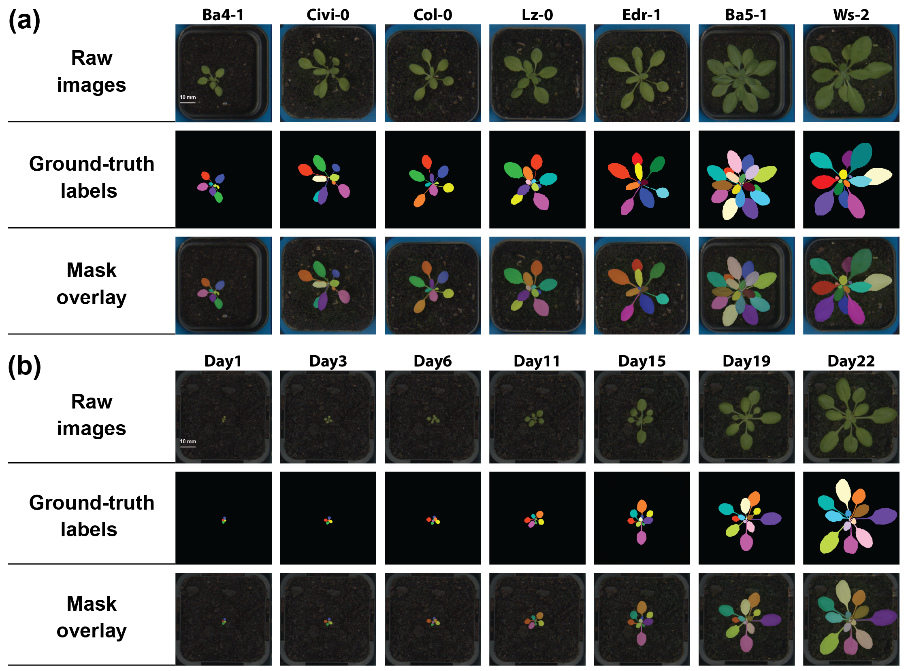
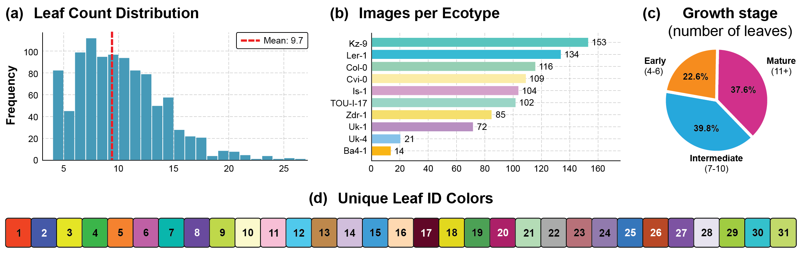
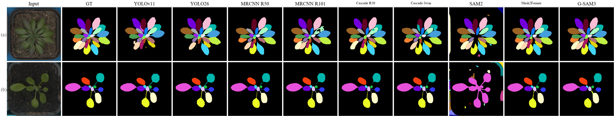
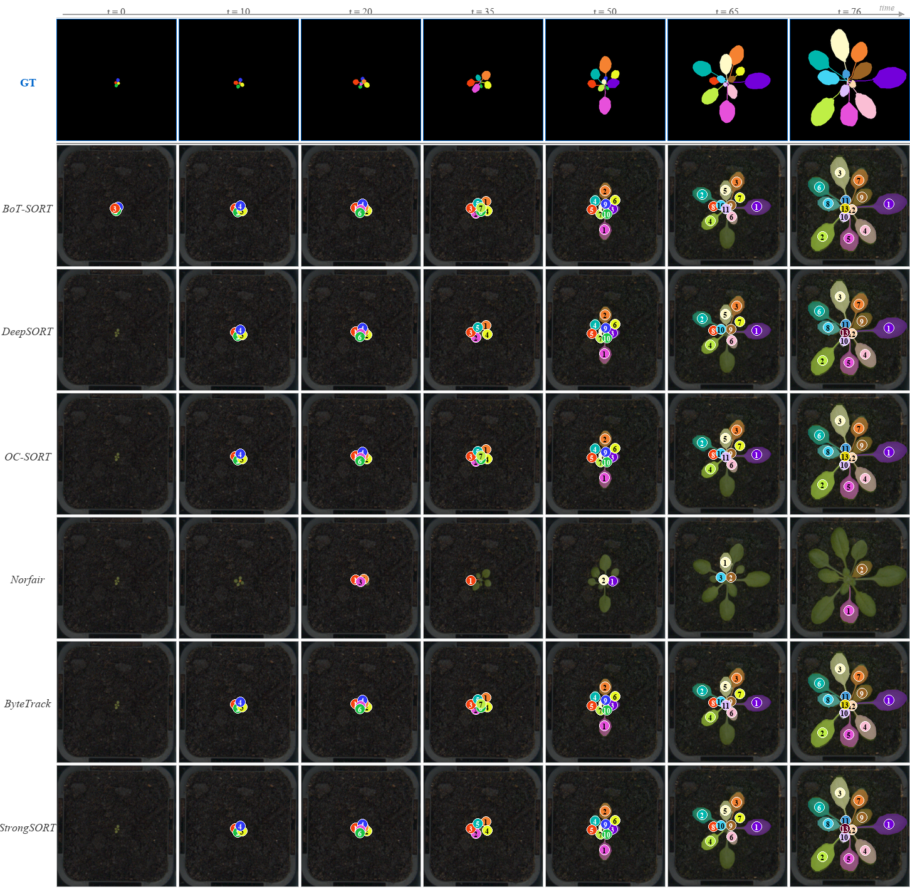
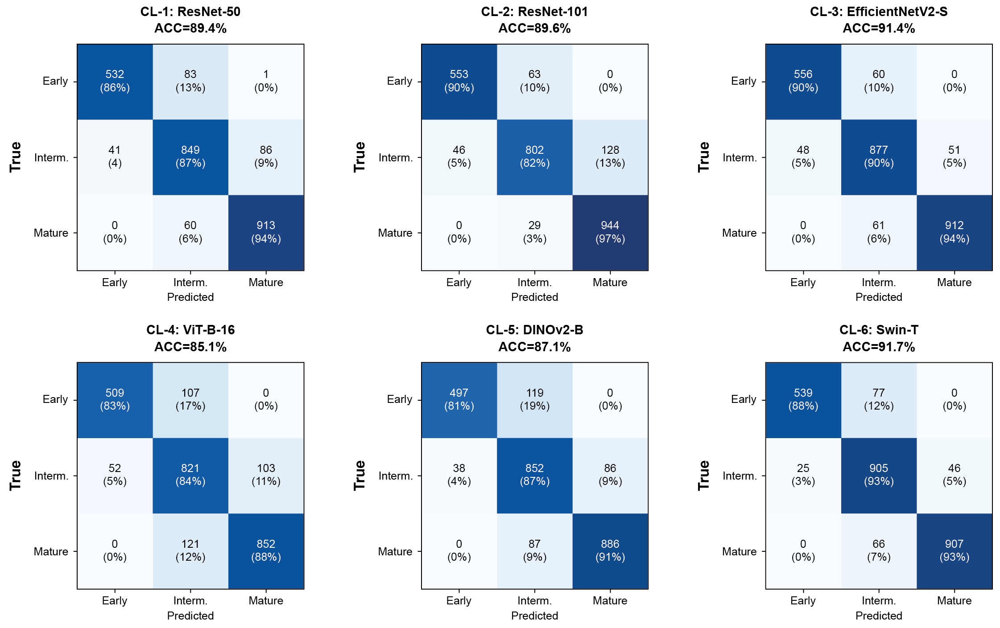
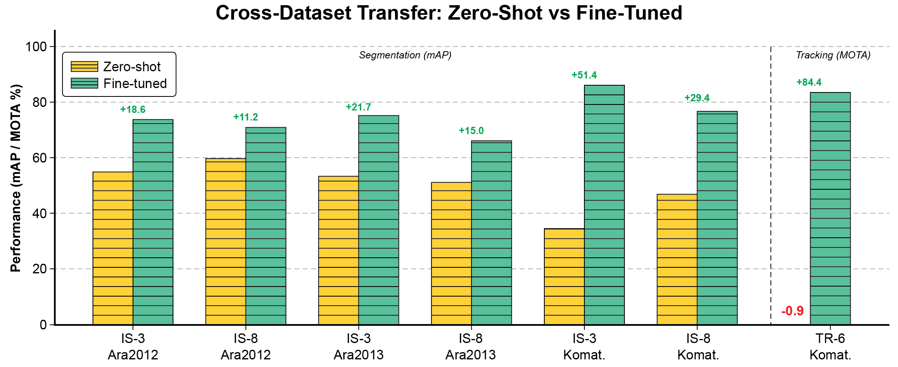

Overview
Image-based high-throughput plant phenotyping requires an instance-level understanding of how individual leaves grow over experimental time, yet existing datasets lack the temporal depth and annotation consistency needed to jointly benchmark segmentation, tracking, and growth stage classification.
PhenoLeaf-TS is a time-series dataset of 17,082 top-down RGB images spanning 21 Arabidopsis thaliana genotypes, totalling 318 plant replicates, each annotated with colour-coded leaf instance masks that maintain a consistent identity throughout the growth sequence. We define three benchmark tasks with standardised protocols and evaluate 21 models: 9 instance-segmentation architectures, 6 multi-object trackers, and 6 classification architectures.

Highlights
- 17,082 RGB images · 21 Arabidopsis genotypes · 318 replicates · ~530×525 px
- Temporally consistent, colour-coded leaf instance masks (fixed 31-colour palette)
- Three tasks in one dataset: instance segmentation, leaf tracking, growth stage classification
- 21 baseline models benchmarked under standardised protocols
- First dataset to combine large-scale time-series imagery, per-leaf instance labels, tracking, and growth stages
- Effective pre-training source: up to +51.4 mAP fine-tuning gain on external datasets
The Dataset
Collection & Annotation
21 Arabidopsis thaliana genotypes were grown in a controlled chamber and imaged from above (2–4 images/day) with a 4.92 MP RGB camera on an automated gantry. Each of the 318 replicates is a separate sequence from seedling emergence to a mature rosette. Leaf instance masks were manually annotated in CVAT with a fixed palette of 31 perceptually distinct colours; the same physical leaf keeps the same colour across all frames, so tracking accuracy can be measured directly against the colour-coded ground truth. All annotations passed a two-pass QC review.

Comparison with existing datasets
| Dataset | Species | Images | Instance | Time-series | Tracking | Growth | Public |
|---|---|---|---|---|---|---|---|
| Ara2012 | A. thaliana | 120 | ✓ | – | – | – | ✓ |
| Ara2013 | A. thaliana | 27 | ✓ | – | – | – | ✓ |
| Ara2014 | A. thaliana | 168 | ✓ | – | – | – | ✓ |
| MSU-PID | A. thaliana/Bean | 2,000+ | Partial | ✓ | – | – | ✓ |
| Komatsuna | Komatsuna | 900 | ✓ | ✓ | ✓ | – | ✓ |
| PhenoBench | Sugar beet | 1,500+ | Panoptic | – | – | – | ✓ |
| PhenoLeaf-TS (Ours) | A. thaliana (21) | 17,082 | ✓ | ✓ | ✓ | ✓ | ✓ |
Benchmark Tasks & Results
All experiments use a 70/15/15 random split per replicate at the image level. Trackers use IS-1 (YOLOv11) detections; classifiers are fine-tuned from ImageNet (DINOv2 for CL-5). All runs on 4× NVIDIA A100 GPUs.
Task 1 — Leaf Instance Segmentation
Best: Mask R-CNN R50-FPN, 73.2 mAP. Two-stage detectors lead; larger backbones do not help (R50 > R101 > X101).
| ID | Model | Backbone | mAP | mAP50 | mAP75 |
|---|---|---|---|---|---|
| IS-3 | Mask R-CNN | R50-FPN | 73.2 | 94.3 | 82.9 |
| IS-4 | Mask R-CNN | R101-FPN | 72.4 | 93.4 | 81.6 |
| IS-6 | Cascade Mask R-CNN | R50-FPN | 71.9 | 91.5 | 81.8 |
| IS-8 | Mask2Former | Swin-L | 71.9 | 94.6 | 82.7 |
| IS-5 | Mask R-CNN | X101-FPN | 71.3 | 91.4 | 80.4 |
| IS-9 | Grounded SAM2 | Hiera-L | 71.1 | 87.9 | 81.2 |
| IS-1 | YOLOv11-seg | CSPDarknet-X | 68.2 | 84.7 | – |
| IS-2 | YOLO26-seg | CSPDarknet-L | 67.3 | 84.3 | – |
| IS-7 | SAM2 (AMG) | Hiera-L | 55.0 | 66.7 | 63.2 |

Task 2 — Leaf Tracking
Best: ByteTrack, 84.1% MOTA / 91.0% IDF1. Inclusive two-threshold association handles newly emerged leaves.
| ID | Tracker | MOTA↑ | MOTP↓ | IDF1↑ | IDSW↓ | Prec↑ | Recall↑ |
|---|---|---|---|---|---|---|---|
| TR-5 | ByteTrack | 84.1 | 29.8 | 91.0 | 590 | 99.5 | 85.9 |
| TR-1 | BoTSORT | 83.1 | 27.1 | 90.3 | 692 | 99.5 | 85.1 |
| TR-2 | DeepSORT | 68.4 | 33.7 | 81.7 | 43 | 96.7 | 70.9 |
| TR-3 | Deep-OC-SORT | 66.1 | 23.4 | 79.5 | 417 | 99.6 | 67.4 |
| TR-6 | StrongSORT | 64.2 | 24.2 | 78.0 | 345 | 99.8 | 65.2 |
| TR-4 | Norfair | 57.8 | – | 73.4 | 71 | 99.3 | 58.4 |

Task 3 — Growth Stage Classification
Best: Swin-T, 91.7% accuracy. Errors concentrate at adjacent-stage boundaries; no model confuses Early with Mature.
| ID | Model | Pre-train | Acc | F1macro | Prec | MCC |
|---|---|---|---|---|---|---|
| CL-6 | Swin-T | ImageNet | 91.7 | 91.7 | 92.4 | 0.873 |
| CL-3 | EfficientNetV2-S | ImageNet | 91.4 | 91.4 | 91.5 | 0.869 |
| CL-2 | ResNet-101 | ImageNet | 89.7 | 89.6 | 90.1 | 0.843 |
| CL-1 | ResNet-50 | ImageNet | 89.4 | 89.4 | 89.9 | 0.838 |
| CL-5 | DINOv2-B | DINOv2 | 87.1 | 87.1 | 88.2 | 0.803 |
| CL-4 | ViT-B/16 | ImageNet | 85.1 | 85.3 | 86.1 | 0.771 |

Cross-Dataset Transfer
Fine-tuning from PhenoLeaf-TS weights consistently improves performance on CVPPP (Ara2012, Ara2013) and Komatsuna; the largest gain (+51.4 mAP) is cross-species transfer to Komatsuna.
| Dataset | Task | Model | Zero-shot | Fine-tuned | Δ |
|---|---|---|---|---|---|
| Ara2012 | Seg. | Mask R-CNN (IS-3) | 55.3 | 73.9 | +18.6 |
| Ara2013 | Seg. | Mask R-CNN (IS-3) | 53.5 | 75.2 | +21.7 |
| Ara2013 | Cls. | Swin-T (CL-6) | 21.0 | 78.0 | +57.0 |
| Komatsuna | Seg. | Mask R-CNN (IS-3) | 34.7 | 86.1 | +51.4 |
| Komatsuna | Seg. | Mask2Former (IS-8) | 47.1 | 76.7 | +29.6 |

Downloads
Dataset (Figshare) — 17,082 images + colour-coded instance masks + split files. [DOI pending] Code (GitHub) — training, evaluation, and transfer pipelines for all 21 models. Trained models — best checkpoints per task. [host TBD] Paper PDF — camera-ready, ECCV 2026. [link TBD]Citation
@inproceedings{saric2026phenoleafts,
title = {PhenoLeaf-TS: A Time-Series Benchmark for Leaf Instance
Segmentation, Tracking, and Growth Stage Classification},
author = {Sari\'c, Rijad and Azam, Basim and Khan, Sarmad and \v{C}ustovi\'c, Edhem},
booktitle = {Proceedings of the European Conference on Computer Vision (ECCV)},
year = {2026}
}
Acknowledgements & Contact
[Confirm funding/acknowledgements — e.g. ARC Research Hub for Protected Cropping; Photon Systems Instruments (PSI); compute provided by the CEITEC HPC facility. Add corresponding-author email.]